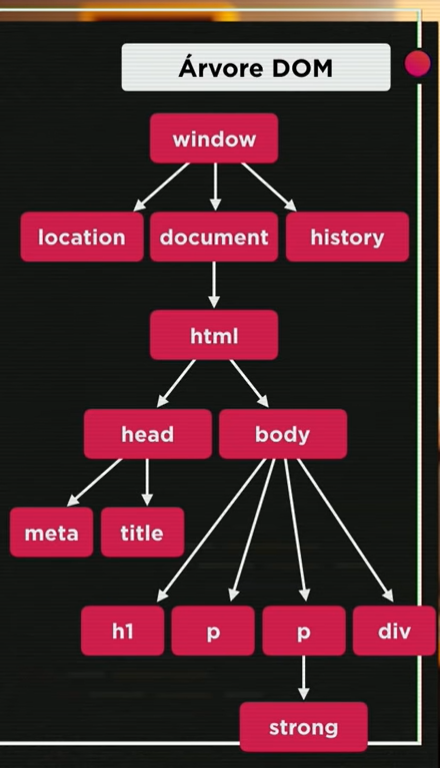

Iniciando estudos DOM.
Aqui vai o resultado.
Aprendendo a usar o DOM em JavaScript.
Clique aqui
Árvore Dom

Selecionando elementos (Objetos) no DOM
- por Marca => getElementByTagName()
- por ID => getElementById()
- por Nome => getElementByTagName()
- Por Classe => getElementByClass()
- Por Seletor => getElementBySelector()
Exemplificando com o Script: